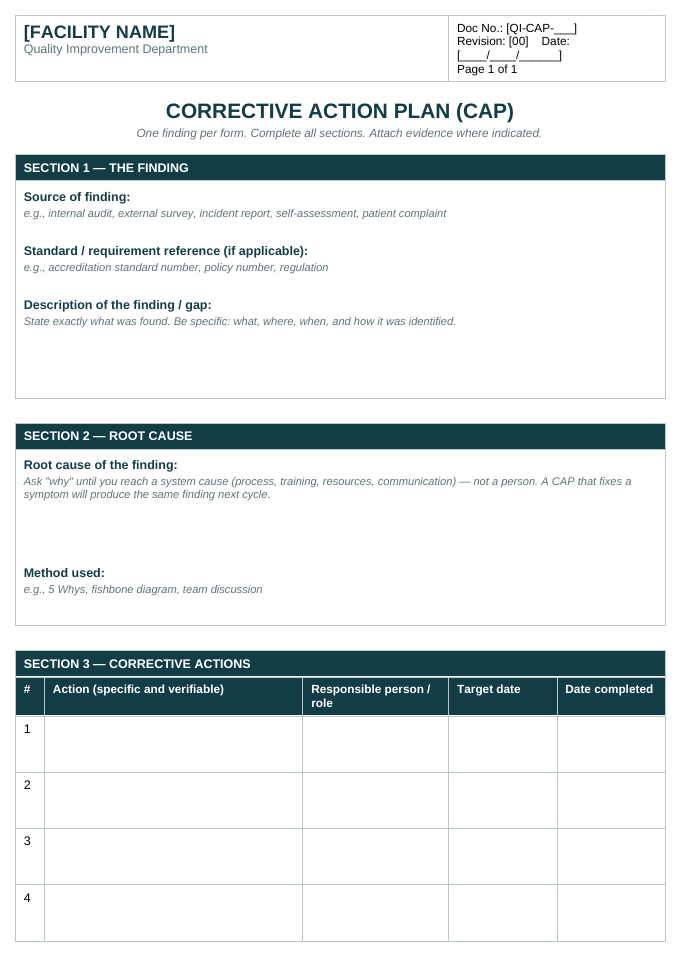
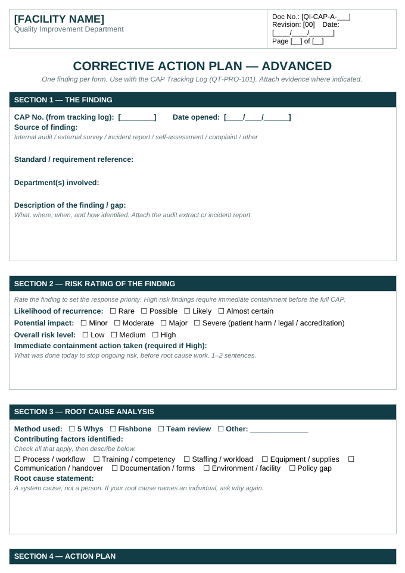
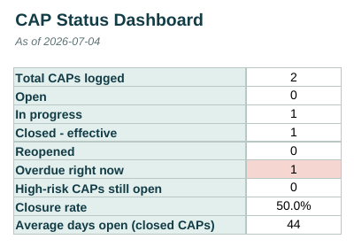
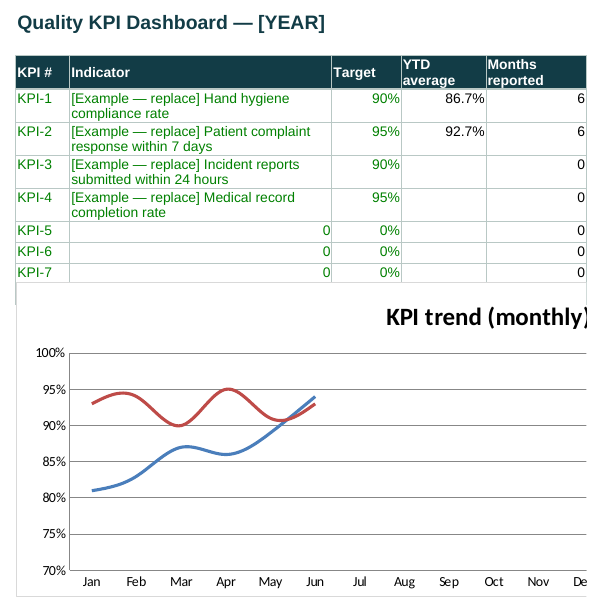

Free templates, plain-language guides, and a career starter kit for healthcare Quality Officers — whether you're preparing for your first role or your next accreditation survey.
Document registerREV 01
Corrective Action Plan templateQT-CAP-001
ISSUED
Internal audit checklistQT-AUD-002
ISSUED
Incident (OVR) report formQT-OVR-003
ISSUED
QIO career starter guideQT-CAR-006
ISSUED
Start here
Two paths. Pick yours.
See before you download
These are the actual documents.
No mock-ups. Every preview below is a screenshot of the real template you'll receive — the same structure surveyors see in working quality departments.

CAP templateFree · one-page corrective action plan

Advanced CAP formPro · adds risk rating & containment

CAP dashboardPro · updates itself from your log

KPI dashboardPro · monthly trends, auto target flags
7+
templates & guides in the register
100%
editable — Word & Excel, no locked files
Any
accreditation system — CBAHI, JCI & more
0
sign-ups needed for free downloads
Built from real accreditation work — with a 7-day guarantee
Every template comes from documents used in actual survey preparation by a practicing CPHQ-certified quality officer, rebuilt as generic tools. If a Pro pack doesn't fit your work, reply to your receipt within 7 days for a full refund. No forms, no questions.
QT-LRN · For aspiring & new officers
Learn the role
Quality improvement has its own language. These pages translate it into plain terms so you can be useful from week one — in any country, under any accreditation system.
QT-LRN-01
What a Quality Officer actually does
Forget the job description. In practice, the role is four jobs in one:
Systems builder — turning standards into policies, forms, and workflows staff can actually follow.
Evidence keeper — audits, incident reports, meeting minutes, and dashboards that prove the system works.
Improvement coordinator — running PDSA cycles and corrective actions when something isn't working.
Translator — sitting between surveyors, leadership, and frontline staff, making each understandable to the others.
QT-LRN-02
How to become a QIO
The most common route worldwide: clinical background → quality exposure → certification → the role.
Start volunteering for quality work where you are now: audits, incident follow-up, committee minutes.
Learn one improvement method properly (PDSA is the usual first).
Pursue a recognized credential — CPHQ is the most portable internationally; national options exist too.
Build a small evidence portfolio: one audit, one improvement project, one policy you helped write.
The improvement cycle in one picture. Plan a small change and predict what will happen. Do it on a small scale. Study the result against your prediction. Act — adopt, adapt, or abandon — and go around again. Most real improvement is three or four small loops, not one big project.
PDSA — Plan, Do, Study, Act
The basic engine of improvement. Plan a small change, try it on a small scale, study what happened against what you predicted, then act — adopt it, adapt it, or abandon it. Small and fast beats big and perfect.
RCA — Root Cause Analysis
A structured way to ask "why did this really happen?" after an incident — usually by asking "why" repeatedly until you reach a system cause, not a person to blame. Good RCA produces a fixable cause; bad RCA produces a scapegoat.
CAP — Corrective Action Plan
The document that answers a finding: what was wrong, what will be done, who owns it, by when, and how you'll verify it worked. Surveyors read hundreds of these — the good ones are specific, dated, owned, and verified.
OVR / Incident report
Occurrence Variance Report — one name among many (incident report, event report) for the form staff complete when something goes wrong or nearly goes wrong. The goal is learning, not punishment; reporting rates rise when staff trust that.
Risk register
A living list of what could go wrong in your facility, scored by likelihood and impact, with owners and mitigation actions. It tells leadership where to spend attention before an incident forces the issue.
QT-LRN-04 · Accreditation 101
How accreditation works, everywhere
Programs differ by country — CBAHI in Saudi Arabia, JCI internationally, Accreditation Canada, ACHS in Australia, and many national bodies — but the survey cycle is nearly universal:
Standards are published
Each standard says what the facility must have in place: a policy, a process, a competency, a record.
The facility self-assesses
You score yourselves against every standard, find the gaps, and open corrective actions for each one.
Evidence is built
Policies, training records, audits, minutes, and dashboards — organized so a stranger can verify compliance in minutes.
Surveyors visit
They interview staff, trace real patients through the system, and check that what's written is what actually happens.
Findings become CAPs
Every gap gets a corrective action plan with owners and deadlines — and the cycle begins again.
QT-TLS · For working officers
Tools for the job
Generic, editable, and accreditation-agnostic. Every template ships blank with instructions built in — adapt the header to your facility and your standards, and it's yours.
Templates
Editable working documents
Corrective Action Plan — finding → action → owner → deadline → verification, in one page. ISSUED
Internal audit checklist — criteria, scoring, and findings summary.
Policy & procedure shell — the standard structure: purpose, scope, definitions, policy, procedure, references, approval block.
Guides
Cheat sheets & references
Survey-readiness cheat sheet — what surveyors check first, chapter by chapter, mapped to the common standard families (leadership, medication, infection control, facility safety).
Evidence file structure — how to organize a compliance binder or shared drive so any document is findable in under a minute.
PRO Advanced versions — tracking logs, scoring workbooks, and KPI dashboards — are available as low-cost paid packs in Downloads. Core templates stay free.
How to adapt a template: replace the header with your facility name and logo, insert your own document control number, align terminology with your accreditation body (e.g., OVR vs. incident report), and route it through your document approval process before use. Templates here are starting points, not approved facility documents.
QT-REG-01 · Document register
Downloads
Every resource on the site, in one controlled list. Filter by who it's for. Everything marked FREE downloads instantly — no sign-up. PRO packs are delivered by email after secure checkout.
Free
Core templates & guides
The essential forms every quality officer needs — one-page templates, cheat sheets, and the career starter kit. Free forever, no sign-up.
$0 · always
Pro
Advanced working systems
Complete multi-document packs: tracking logs, scoring workbooks, dashboards, and full document sets — the versions built for daily departmental use.
QT-AUD-002Internal audit checklist FREECriteria list with compliance scoring and findings summary.Working QIOsWord (.docx)DOWNLOAD
QT-OVR-003Incident (OVR) report form FREEEvent details, immediate action, classification, and follow-up section.Working QIOsWord (.docx)DOWNLOAD
QT-POL-004Policy & procedure shell FREEStandard policy structure with approval block and revision history.Working QIOsWord (.docx)DOWNLOAD
QT-CHT-005Survey-readiness cheat sheet FREEWhat surveyors check first, mapped to common standard families.BothPDFDOWNLOAD
QT-CAR-006"How to become a QIO" starter guide FREEBackgrounds, pathways, and the first-90-days checklist for new officers.Aspiring QIOsPDFDOWNLOAD
QT-CPQ-007CPHQ study roadmap FREEDomains, resources, and a week-by-week preparation plan.Aspiring QIOsPDFDOWNLOAD
QT-PRO-101Advanced CAP system PROCAP form + Excel tracking log with status, aging, and overdue flags for all open actions.Working QIOsWord + ExcelBUY · $19
QT-PRO-103Quality plan + KPI dashboard pack PROAnnual quality plan template + indicator definition sheets + Excel KPI dashboard with charts.Working QIOsWord + ExcelBUY · $29
QT-PRO-100Everything bundle PROAll Pro packs together, plus every future Pro update at no extra cost.Working QIOsAll formatsBUY · $59
Free resources stay free — the Pro tier funds the site and covers advanced multi-document systems only. All Pro packs carry a 7-day full-refund guarantee. Payments are processed securely by an external checkout provider; no payment details are ever handled by this site. All resources are generic, not affiliated with or approved by any accreditation body. Always route adapted documents through your own facility's approval process.
Early reviewer program — get the Everything Bundle free
The Pro tier is newly launched, so instead of showing you invented testimonials, we're collecting real ones. The first 10 quality professionals who agree to use a Pro pack in their actual work and send honest written feedback within 30 days get the full bundle free. Email qiotoolkit@gmail.com with your role and facility type to claim a spot. Reviews will be published here — good or bad.
QT-FAQ-01
Common questions
Are the templates editable, or locked PDFs?
Fully editable Word (.docx) and Excel (.xlsx) files. Replace the bracketed fields with your facility's details, add your logo, apply your document numbers — they become your documents.
Will these work with my accreditation system?
Yes. The templates are deliberately generic: CAPs, audits, incident forms, KPI monitoring, and quality plans are required in essentially the same shape by CBAHI, JCI, Accreditation Canada, ACHS, and national programs. You align the terminology and standard references; the structure already fits.
How do I receive the files after buying?
Instantly. Checkout is handled by a secure payment provider, and the download link is emailed to you the moment payment completes. This site never sees your card details.
Can I share the files with my department?
Within your own facility, yes — that's what they're for. Redistributing or reselling the files outside your facility isn't permitted; it's what keeps the Pro tier affordable.
What if a template doesn't fit my work?
Reply to your purchase receipt within 7 days and you get a full refund. No forms, no questions asked.
QT-ABT-01
About this project
The QIO Toolkit exists because most healthcare quality resources are either academic theory or locked inside individual facilities. The people doing the work — and the people trying to enter it — end up rebuilding the same documents from scratch, everywhere, every time.
This site is built and maintained by a practicing, CPHQ-certified Quality Improvement Officer working in ambulatory care. Everything here comes from documents used in real accreditation preparation, stripped of facility-specific content and rebuilt to work under any accreditation system.
It is free, and it will stay free.
Disclaimer. Resources on this site are general professional templates and educational material. They are not legal, regulatory, or clinical advice, and they are not endorsed by CBAHI, JCI, NAHQ, or any other body. Adapting them for your facility — and getting them approved — is your responsibility. No patient data or facility-identifiable information is ever included in any resource here.